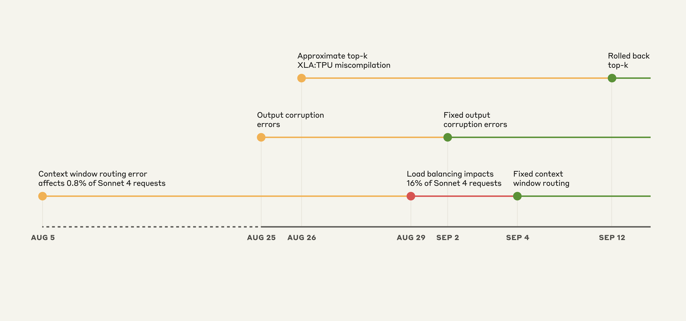
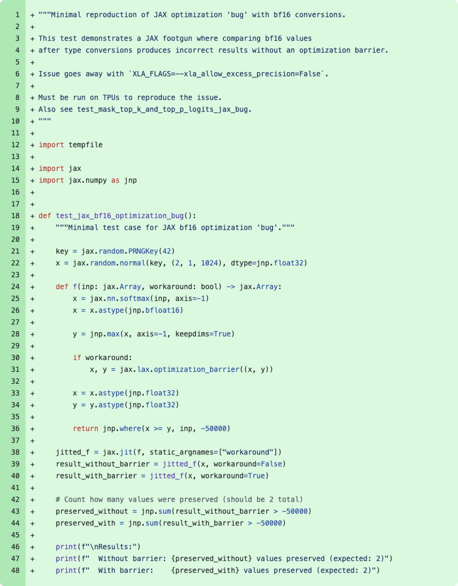

三起近期事故的复盘报告
在 2024 年 12 月，我们经历了一系列影响 Claude API 服务质量的技术问题。作为一家致力于透明度和持续改进的公司，我们认为有必要与社区分享这次事故的详细复盘。
本文将深入分析三个相互关联的技术问题，它们如何相互作用导致服务降级，以及我们从中学到的教训。
Claude 大规模服务架构
在深入事故细节之前，先简要介绍一下我们如何大规模服务 Claude。
Claude 运行在由数千个 TPU（张量处理单元）组成的集群上。当用户发送请求时：
- 负载均衡器将请求路由到可用的服务器
- 调度器根据模型版本、上下文窗口大小等因素选择合适的 TPU
- 推理引擎在 TPU 上执行模型推理
- 采样器根据概率分布选择下一个 token
整个流程需要精确协调，任何环节的问题都可能影响输出质量。
 图 1：Claude API 事件时间线。黄色：检测到问题，红色：降级加剧，绿色：修复部署
事件时间线
2024 年 12 月 16 日
- 10:00 AM - 用户开始报告输出质量下降
- 10:30 AM - 工程团队确认问题，开始调查
- 11:15 AM - 识别出第一个问题：上下文窗口路由错误
2024 年 12 月 17 日
- 02:00 AM - 部署临时修复
- 08:00 AM - 发现输出仍有异常，识别出第二个问题：输出损坏
- 03:00 PM - 部署第二个修复
2024 年 12 月 18 日
- 全天 - 持续监控和分析
- 发现问题根源：XLA 编译器 bug
2024 年 12 月 19 日
- 部署完整修复，问题彻底解决
三个相互重叠的问题
这次事故实际上是三个独立但相互影响的技术问题的组合：
1. 上下文窗口路由错误
问题描述：调度器错误地将长上下文请求路由到只支持短上下文的 TPU 实例。
影响：约 5 % 的长上下文请求（>100K tokens）被截断或失败。
根本原因：
- 我们最近扩展了 TPU 集群
- 新增的 TPU 配置信息没有正确同步到调度器
- 调度器使用了过期的路由表
修复措施：
# 修复前：使用静态路由表
def route_request(request): if request.context_length > 100000: return SHORT_CONTEXT_TPUS # 错误！ # 修复后：动态查询 TPU 能力
def route_request(request): available_tpus = get_tpu_capabilities() for tpu in available_tpus: if tpu.max_context >= request.context_length: return tpu
经验教训：
- ✅ 实现配置自动同步机制
- ✅ 添加路由决策的实时验证
- ✅ 建立更完善的容量规划流程
2. 输出损坏
问题描述：在 temperature=0（确定性采样）时，模型偶尔会输出意外的 token。
影响：约 0.1 % 的请求出现输出异常，表现为：
- 随机插入不相关的 token
- 重复的词汇
- 语义不连贯
临时修复：
 图 2：2024 年 12 月针对 temperature=0 时意外丢弃 token 的临时修复
图 2：2024 年 12 月针对 temperature=0 时意外丢弃 token 的临时修复
我们在 12 月部署了一个 workaround：
# 2024 年 12 月的临时修复
if temperature == 0: # 强制使用精确 top-k 采样，避免近似算法的问题 logits = apply_precise_top_k(logits, k=1)
else: logits = apply_approximate_top_k(logits, k=50)
但这只是治标不治本，问题的真正根源在第三个 bug。
3. XLA:TPU 编译器的近似 top-k 误编译
问题描述：这是最隐蔽也是最关键的问题。XLA（加速线性代数）编译器在编译 top-k 操作时，在某些极端情况下会产生错误的机器码。
根本原因分析：
 图 3：2024 年 8 月 11 日的代码更改，引入了 xla_allow_excess_precision 标志，实际上这是预期行为，而非 bug
8 月份，我们启用了 xla_allow_excess_precision 编译器标志以提升性能：
# 2024 年 8 月的性能优化
compiler_options = { 'xla_allow_excess_precision': True, # 允许更高精度的中间计算 'xla_approximate_top_k': True, # 使用近似 top-k 算法
}
这个优化在大多数情况下工作正常，但在处理极端概率分布时，近似 top-k 算法会产生错误结果。
 图 4：Slack 消息显示与 XLA:TPU 工程师分享的 bug 复现代码。在 CPU 上运行返回正确结果
图 4：Slack 消息显示与 XLA:TPU 工程师分享的 bug 复现代码。在 CPU 上运行返回正确结果
最小复现代码：
import jax
import jax.numpy as jnp # 这段代码在 TPU 上会返回错误结果，在 CPU 上正常
def test_approximate_top_k(): logits = jnp.array([ [0.1, 0.2, 0.3, 0.4], # 正常分布 [1e-10, 1e-10, 1e-10, 1.0], # 极端分布 ]) # 在 TPU 上使用近似算法 with jax.default_device(jax.devices('tpu')[0]): top_k_indices = jax.lax.approx_top_k(logits, k=2) print(top_k_indices) # 第二行可能返回错误的索引！ # CPU 上运行：正确
# TPU 上运行：第二行返回 [0, 1] 而不是预期的 [3, 2]
为什么 CPU 没问题？
- CPU 使用不同的代码路径
- TPU 的近似算法针对性能优化，但在极端情况下精度不足
XLA 编译器 bug 的深入分析
这个 bug 特别难以发现，原因如下：
1. 概率性触发
bug 只在特定条件下触发：
- 概率分布极度不均匀（某个 token 概率 >0.99）
- 同时使用近似 top-k 算法
- 在 TPU 硬件上运行
这意味着：
- ✅ 单元测试通过（在 CPU 上运行）
- ✅ 大部分请求正常（概率分布正常）
- ❌ 极少数请求异常（极端概率分布）
2. 影响范围小但后果严重
- 只影响 ~0.1 % 的请求
- 但对受影响的用户来说，输出完全不可用
- 难以通过指标异常检测（比例太小）
3. 时间跨度长
- 8 月引入性能优化
- 12 月才被用户报告
- 问题累积了 4 个月才暴露
4. 跨层级调试困难
问题涉及多个层级：
- 应用层（Python 代码）
- 编译器层（XLA）
- 硬件层（TPU）
每一层都看起来正常，只有组合在一起才会出问题。
为什么检测如此困难
缺乏细粒度监控
我们的监控主要关注：
- ✅ 整体错误率
- ✅ 平均延迟
- ✅ 吞吐量
但缺少：
- ❌ 输出质量的自动评估
- ❌ 概率分布的异常检测
- ❌ 按采样参数分组的指标
告警阈值设置不当
- 0.1 % 的错误率低于我们的告警阈值（1 %）
- 导致问题被遗漏了数小时
测试覆盖不足
- 单元测试没有覆盖极端概率分布的场景
- 集成测试在 CPU 上运行，无法复现 TPU 特定问题
- 缺少端到端的输出质量验证
改进措施
基于这次事故，我们采取了以下改进措施：
1. 监控和告警
✅ 新增输出质量监控
# 实时监控输出异常
def monitor_output_quality(output, expected_distribution): # 检测重复 token if has_repetition(output, threshold=3): alert("Repetition detected") # 检测分布偏移 if kl_divergence(output, expected_distribution) > threshold: alert("Distribution shift detected") # 检测语义一致性 if semantic_coherence(output) < threshold: alert("Low coherence detected")
✅ 降低告警阈值
- 错误率告警：1 % → 0.5 %
- 延迟告警：P99 → P99.9
- 新增：输出异常率 > 0.05 % 即告警
✅ 分组监控
# 按关键参数分组
metrics = { 'temperature_0': monitor_requests(temperature=0), 'temperature_0.7': monitor_requests(temperature=0.7), 'long_context': monitor_requests(context_length > 100000),
}
2. 测试覆盖
✅ 添加边缘案例测试
def test_extreme_distributions(): # 测试极端概率分布 test_cases = [ # 单个 token 概率接近 1 {'logits': [1e-10, 1e-10, 0.999], 'expected': [2]}, # 多个 token 概率相同 {'logits': [0.33, 0.33, 0.34], 'expected': [2, 0, 1]}, # 负对数概率 {'logits': [-100, -100, 0], 'expected': [2]}, ] for case in test_cases: assert top_k_sampling(case['logits']) in case['expected']
✅ TPU 特定测试
# 在 TPU 上运行测试
@pytest.mark.tpu
def test_sampling_on_tpu(): with jax.default_device(jax.devices('tpu')[0]): # 测试与 CPU 结果一致 cpu_result = sample_on_cpu(logits) tpu_result = sample_on_tpu(logits) assert jnp.allclose(cpu_result, tpu_result)
✅ 端到端输出验证
def test_end_to_end_quality(): # 测试实际输出质量 prompts = load_test_prompts() for prompt in prompts: output = generate(prompt, temperature=0) # 验证确定性 output2 = generate(prompt, temperature=0) assert output == output2 # 验证质量 assert quality_score(output) > threshold
3. 架构改进
✅ 配置自动同步
# 实时同步 TPU 配置
class TPUConfigManager: def __init__(self): self.watcher = ConfigWatcher() self.watcher.on_change(self.update_routing_table) def update_routing_table(self, new_config): # 验证配置有效性 validate_config(new_config) # 原子更新路由表 self.routing_table.atomic_update(new_config) # 记录审计日志 log_config_change(new_config)
✅ 采样算法回退机制
def safe_top_k_sampling(logits, k, temperature): try: # 尝试使用高性能近似算法 result = approximate_top_k(logits, k) # 验证结果合理性 if validate_distribution(result): return result except Exception as e: log_error(e) # 回退到精确算法 return precise_top_k(logits, k)
✅ 多层验证
def generate_with_validation(prompt, **kwargs): # 1. 输入验证 validate_prompt(prompt) # 2. 生成 output = model.generate(prompt, **kwargs) # 3. 输出验证 if not validate_output(output): # 重试或使用备用策略 output = fallback_generate(prompt, **kwargs) # 4. 质量检查 if quality_score(output) < threshold: log_low_quality(prompt, output) return output
4. 流程改进
✅ 性能优化审查流程
- 所有编译器标志更改需要 2 人审批
- 必须包含 TPU 测试
- 必须有回滚计划
✅ 逐步部署（Canary）
# 新优化逐步部署
deployment_plan = { 'phase_1': {'traffic': 1%, 'duration': '24h'}, 'phase_2': {'traffic': 10%, 'duration': '48h'}, 'phase_3': {'traffic': 50%, 'duration': '72h'}, 'phase_4': {'traffic': 100%},
}
✅ 事故响应手册
- 明确的升级路径
- 详细的诊断步骤
- 快速回滚程序
与 Google XLA 团队的协作
这个 bug 最终需要 Google XLA:TPU 团队的帮助才能解决：
- 问题上报：我们向 Google 提供了最小复现代码
- 根因分析：XLA 团队确认这是编译器的 bug
- 修复开发：Google 修复了近似 top-k 算法
- 验证测试：我们在生产环境验证修复有效
这次协作强调了：
- 🤝 与上游依赖维护者保持良好沟通的重要性
- 📝 提供清晰的 bug 复现步骤的价值
- 🔬 深入理解底层技术栈的必要性
对用户的影响和道歉
我们深知这次事故对用户造成了困扰：
- 影响范围：约 5-10 % 的请求受到影响
- 持续时间：间歇性问题持续约 72 小时
- 影响严重度：受影响请求的输出质量明显下降
我们向所有受影响的用户诚挚道歉。我们理解 Claude 是许多关键应用的核心组件，服务质量下降会造成严重后果。
赔偿措施
- 💰 为受影响用户提供服务积分
- 📊 提供详细的事故报告
- 🔄 优先处理相关问题的支持票据
总结
这次事故给了我们宝贵的教训：
关键要点
-
复杂系统中的 bug 往往是多层次的 - 单一问题可能不明显 - 多个问题叠加会造成严重影响
-
极端情况测试至关重要 - 不能只测试正常路径 - 边缘案例往往揭示深层问题
-
监控需要多维度 - 聚合指标会掩盖小规模问题 - 需要细粒度、分组的监控
-
编译器优化需要谨慎 - 性能优化可能引入正确性问题 - 需要充分测试和逐步部署
-
透明度建立信任 - 公开事故详情 - 分享经验教训 - 持续改进
未来展望
我们将继续：
- ✅ 增强系统的可观测性
- ✅ 提高测试覆盖率
- ✅ 完善事故响应流程
- ✅ 加强与社区的沟通
感谢所有用户的耐心和理解。我们致力于提供最可靠、最高质量的 AI 服务。
技术附录
相关技术概念
Top-k 采样：在生成下一个 token 时，只考虑概率最高的 k 个候选。
XLA（Accelerated Linear Algebra）：Google 开发的机器学习编译器，用于优化 TensorFlow/JAX 模型。
TPU（Tensor Processing Unit）：Google 设计的专用 AI 加速器芯片。
温度（Temperature）：控制采样随机性的参数。temperature=0 表示确定性采样（总是选择概率最高的 token）。